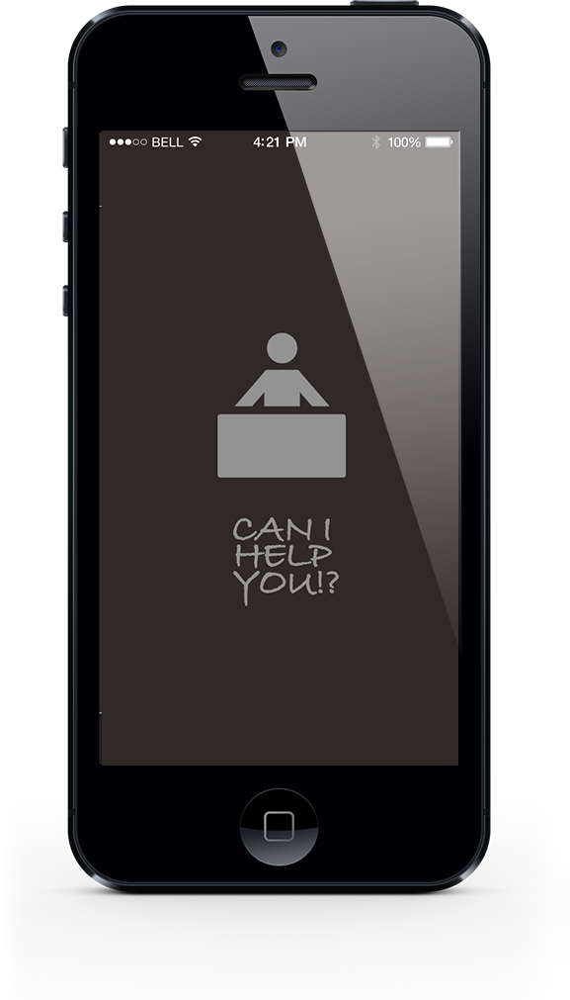
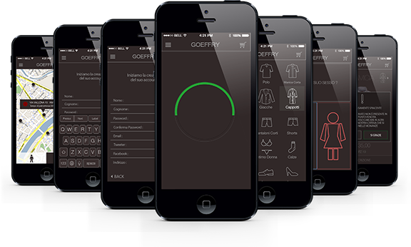
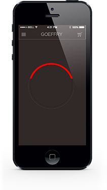
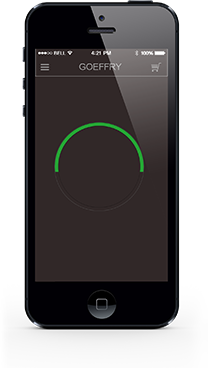
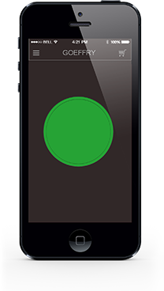

|  |
| GOEFFRY NASCE PER DARE A TUTTI I CLIENTI L'ESPERIENZA DI AVERE IL PROPRIO PERSONAL SHOPPER. |
 |
|
IL BEACON È UN DISPOSITIVO BLUETOOTH V4.0 BLE A BASSO CONSUMO. STIMIAMO UNA DURATA DI CIRCA 1 ANNO CON L'UTILIZZO DI UNA SOLA BATTERIA A BOTTONE.
|
|
IL P·O·D È IL CUORE DI TUTTO IL PROGETTO. |
|
LA GRIGLIA DEI BEACON È PROGETTATA PER TRINAGOLARE LA POSIZIONE DEL DISPOSITIVO MOBILE DEL CLIENTE, GUIDANDOLO ALL'INTERNO DEL PUNTO VENDITA IN MANIERA TALE CHE QUESTI POSSA TROVARE GLI ARTICOLI CHE CERCA, IN TUTTA AUTONOMIA. |



|
Grazie ad un servizio più attento e personalizzato che memorizza i precedenti acquisti del cliente è possibile farlo sentire a suo agio e ben accetto in ogni negozio in cui si rechi, migliorandone e favorendone la fidelizzazione.
Memorizzando e conservando le informazioni su tutti gli acquisti che vengono fatti nel punto vendita, il sistema è in grado di realizzare delle indagini e aiutare il marchio nelle statistiche di vendita. Chi ha comprato cosa e quanto, nell'arco di un anno / mese / settimana o anche giorno per giorno.
Il sistema di navigazione interno al punto vendita, rende possibile ai clienti di trovare gli articoli che li interessano senza dover chiedere indicazioni agli altri commessi (che possono essere impegnati con altri clienti) gestendo tutti i propri acquisti in autonomia e senza interferenze da parte del personale.

{kind=link}